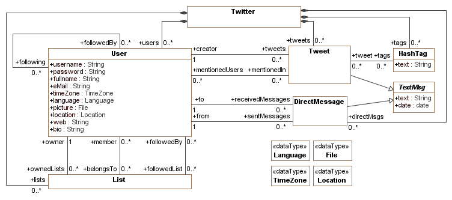

context Twitter
inv usernameIsKey:
self.users->isUnique(username)
context User
inv noAutoFollow:
self.following->excludes(self)
and
self.followedBy->excludes(self)
context TextMsg
inv 140charsIsEnough:
self.text.size()<=140
context Tweet
inv validMention:
self.mentionedUser->forAll(u | (self.text.indexOf("@"
+ u.username)<>0))
inv mentionedTag:
self.tag->forAll(t | (self.text.indexOf(t.text)<>0))
inv isNotDirectMessage:
self.text.indexOf("D @"+self.to.userName)<>1 -- does not
start with "D and then a username
context HashTag
inv validTag:
self.text.indexOf("#")=1 and -- startsWith "#"
self.text.substring(2,self.text.size()).indexOf("#") = 0
and -- does not contain
another "#"
self.text.indexOf(" ") = 0 -- and does not contain spaces
context DirectMessage
inv validMsg:
self.text.indexOf("D @"+self.to.userName)=1
-- starts with "D and then a username
context Twitter::post(u:User,t:Tweet)
-- A user u posts a tweet with text t.text
pre:
t.text.indexOf("D @") <> 1 -- it is not
a direct message
post:
self.tweets->includes(t) and
u.tweets->includes(t) and
t.creator = u and
t.tags->includesAll(t.mentionedTags()) and
t.mentionedUsers->includesAll(t.mentionedUsers())
context Twitter::directMsg(u:User,d:DirectMsg)
pre: -- user u can send direct
messages only to users that follow u
let uname : String =
d.text.substring(d.text.indexOf("@")+1,d.text.substring(d.text.indexOf("@")+1,d.text.size()).indexOf("
")) in
u.followedBy->any(u | u.username = uname)
post:
let uname : String =
d.text.substring(d.text.indexOf("@")+1,d.text.substring(d.text.indexOf("@")+1,d.text.size()).indexOf("
")) in
self.directMsgs->includes(d)
and
d.to = self.users->one(username = uname)
and
d.from = u
context Twitter::search(h : HashTag)
: OrderedSet{Tweet}
-- returns the set of Tweets in the system that contain the tag
post:
result = self.tweets->select(tags.includes(h))
context Twitter::userProfile(username
: String) : OrderedSet{Tweet}
-- returns the Tweets posted of the users and lists followed by the user
defined by username
post:
result = self.tweets->union(self.following.tweets)->
union(self.followedList.member.tweets)->sortedBy(date)
context User::follow(u : User)
post:
self.followedBy->includes(u) and u.following->includes(self)
context User::unfollow(u : User)
post:
self.followedBy->excludes(u) and u.following->excludes(self)
context User::addUserToList(u :
User, l : List)
pre:
self.ownedLists->includes(l)
post:
l.member->includes(u)
context User::rmUserToList(u : User,
l : List)
pre:
self.ownedLists->includes(l)
post:
l.member->excludes(u)
context User::followList(u : User,
l : List)
pre:
self.ownedLists->includes(l)
post:
l.followedBy->includes(u) and u.followedLists->includes(l)
context User::unfollowList(u : User,
l : List)
pre:
self.ownedLists->includes(l)
post:
l.followedBy->excludes(u) and u.followedLists->excludes(l)
context Tweet::mentionedTags() : Set{HashTag}
-- returns the set of tags
mentioned in a tweet
body: result = ...
context Tweet::mentionedUsers() : Set{User}
-- returns the set of users
mentioned in a tweet
body: result = ...